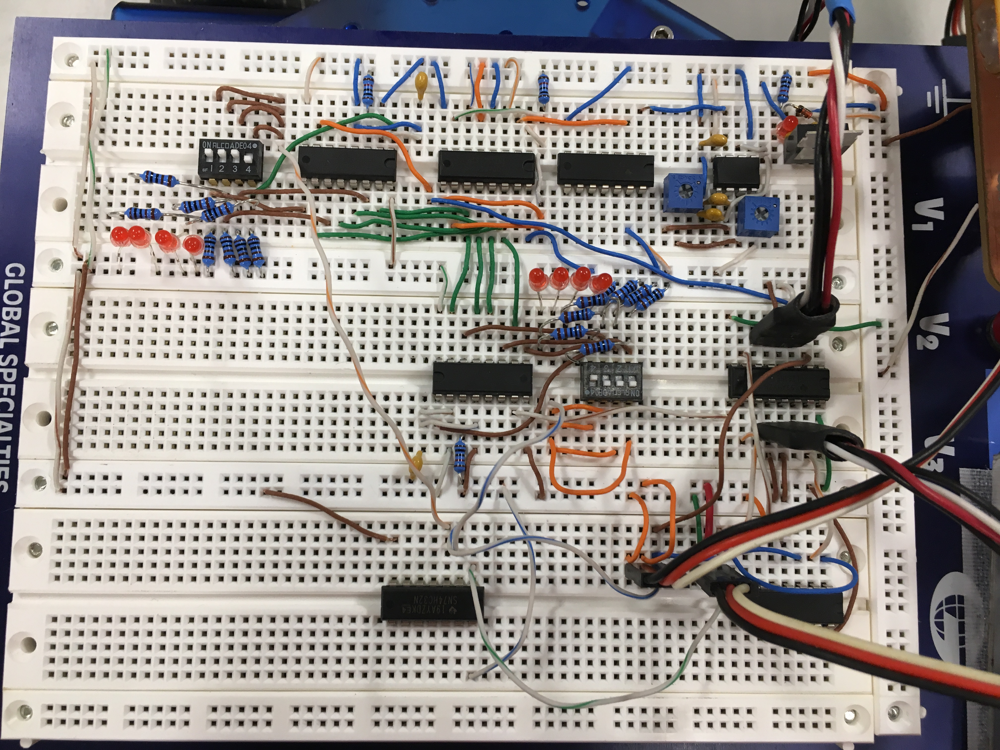
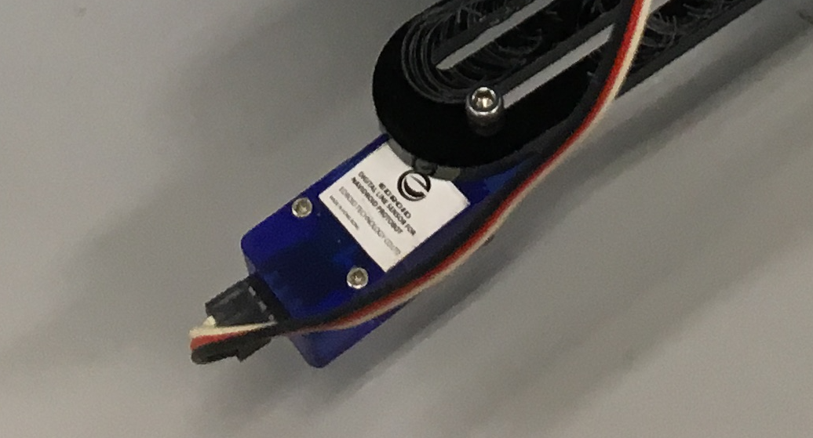
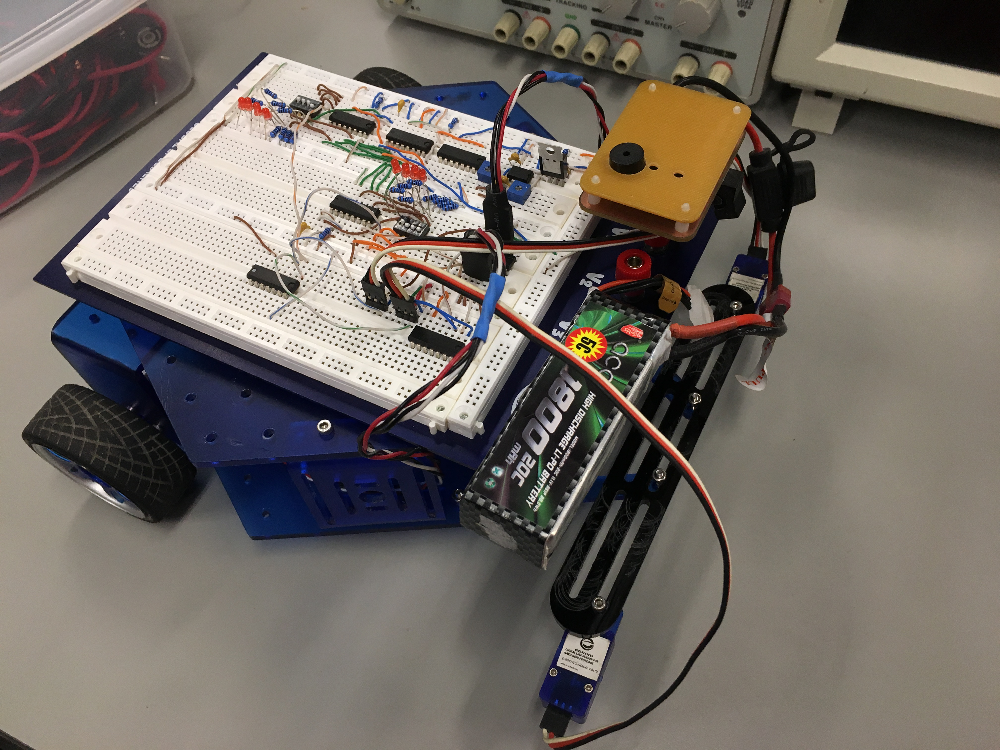

As part of our project, we embarked on an exciting journey to create a robot vehicle equipped with advanced control circuits and sensors. Our goal was to design a versatile robot capable of navigating through a predefined course with precision and efficiency. Let me walk you through the details of our project and the process of bringing our robot to life.
Our endeavor began with a solid foundation in the fundamentals of robotics, which we gained through weeks of intensive coursework. We delved into topics ranging from basic components and electrical principles to advanced concepts like pulse-width modulation and logic design.
Throughout the course, we explored critical areas such as energy regulation, sensor integration, and sequential logic, each building upon the last to provide a comprehensive understanding of robot control systems. Hands-on lab sessions reinforced our theoretical knowledge, allowing us to apply principles learned in the classroom to real-world scenarios.
Armed with the knowledge acquired during the course, we set out to design our robot vehicle. We carefully selected components and configured control circuits on the breadboard, with an Arduino Nano board serving as the central control unit. The integration of three light sensors, including line tracking sensors and a bumper sensor, was crucial for enabling our robot to perceive and interact with its environment.
Configuring the Breadboard
Our project demanded a deep understanding of light sensors and their role in robotic navigation. Line tracking sensors, connected to Arduino input terminals, facilitated course tracking, while the bumper sensor initiated and controlled the robot's movement at key waypoints.
Light Sensors
Programming the Arduino board was a pivotal aspect of our project. We developed code that interpreted sensor inputs and translated them into precise motor control commands. Through logical decision-making and signal modulation, we ensured our robot could navigate the course autonomously with minimal intervention.
Finalized Robot-Controlled Vehicle
With our hardware and software components in place, we conducted rigorous testing to ensure that the vehicle could sense the line on the ground and move accordingly. From powering up to reaching the end of the course, our robot executed each task with precision and accuracy, a testament to our meticulous design and programming efforts. However, we encountered challenges with the placement of the light sensors when navigating perfect perpendicular lines, requiring further adjustments and fine-tuning.
Our project exemplifies the fusion of hardware and software to create a functional and efficient robot vehicle. Through meticulous design and programming, we successfully developed a robot capable of maneuvering through complex courses with ease. While we celebrate our achievements, we recognize that innovation is an ongoing process. As we continue to refine our design and explore new possibilities, we remain committed to pushing the boundaries of robotics and automation.